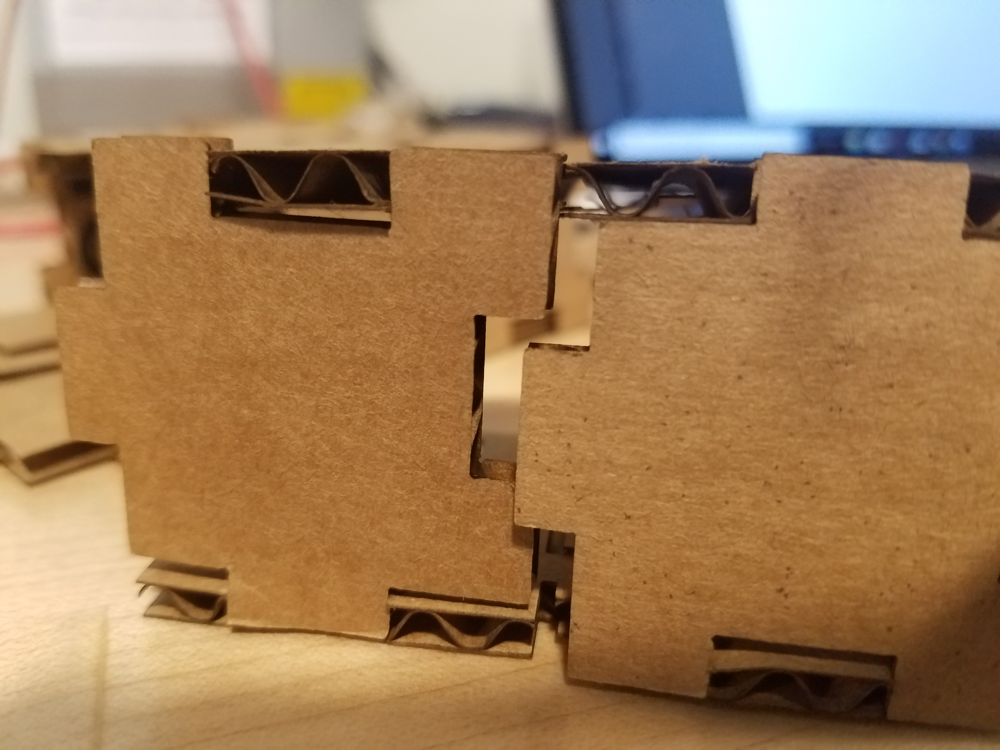
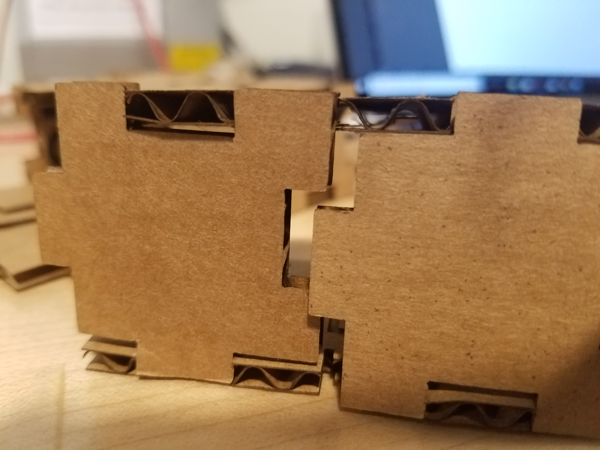

Lukas' Assignment 1!
Press Fit Cardboard Construction Kit Process Overview:
Synthesis / Define
I decided to approach the problem by sketching out ideas based around two criteria.
Ideation / Develop
OVERVIEW: A press fit cardboard puzzle piece In order to best to approach the problem, I sketched out solutions based around the criteria mentioned.
I further iterated my ideas by creating the vetor graphics in Adobe Illustrator

Test / Implementation / Deliver
Overview: Cutting out the pieces and adjusting each of the three pieces for the press fit took a bit of extra time.


Problem:
A tenth of an inch off in each piece would compound creating additional clearance between thus offset the assembly. 

Solution:
This problem was resolved by tons of testing. The issue was resolved by account for the amount of material being removed by the laser and adjusting the files accordingly.The Laser Cuts off about .01 so in order to create a press fit; male ends must be +.01 inches bigger than the female ends as they should be -.01 shorter


Reflection
In the future, I need to explore setting up anchor point to mirror one another such that making adjustments to the file keeps Press Fit intact. Further exploration could include researching the process to make the pieces more flush and compact with one another.
Peer-attribution:
Tanya helped me understand how much the the laser was cutting off (.01") which helped me better gauge my tolerances.
Machine Settings:
Source files
Click the image below to download the Vector Files